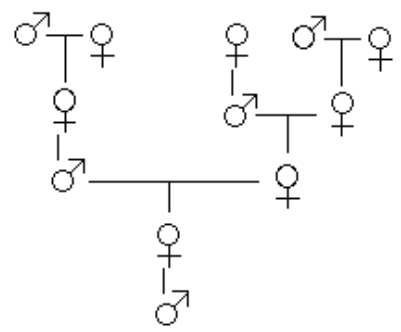
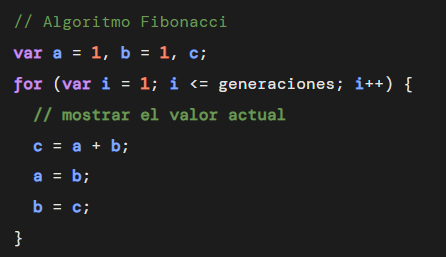
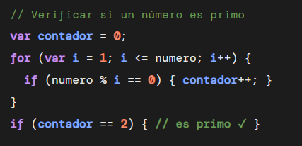
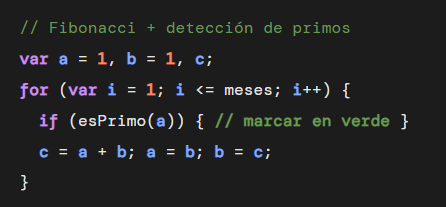

Fibonacci y Números Primos aplicados a problemas reales: colmenas de abejas, seguridad informática y crecimiento de poblaciones.
Fibonacci
En una colmena, el nacimiento de las abejas es muy especial y diferente al de otros animales. Cuando la reina pone un huevo y este se junta con una abeja macho lo fertiliza (Huevo fertilizado) siendo de ahí donde nace siempre una hembra, que puede convertirse en una trabajadora obrera o en una nueva reina. En cambio, si el huevo no se junta con ninguna abeja macho y nace (huevo no fertilizado), de ahí sale un macho, al que se llama zángano. Esto significa algo súper curioso que sorprende a todo el mundo ya que un zángano solo tiene madre, pero no tiene padre.
Si trazamos el árbol de ancestros de un zángano generación por generación, la cantidad de ancestros sigue exactamente la serie de Fibonacci:

Árbol genealógico de un zángano
Este patrón permite a los biólogos y apicultores estudiar la estructura familiar de una colmena, estimar la diversidad genética y entender cómo se propagan las características hereditarias dentro de la colonia.
La serie de Fibonacci se construye con una regla simple: cada número es la suma de los dos anteriores. Para calcularlo usamos tres variables simples, sin necesidad de arrays.

Algoritmo Fibonacci
Números Primos
Cada vez que entrás a un sitio web con HTTPS, enviás un correo electrónico cifrado o realizás una transacción bancaria en línea, tu información viaja protegida gracias a un sistema llamado RSA el cual fue creado en 1977 y es el estándar de seguridad más usado en internet hasta hoy.
RSA se basa en una propiedad matemática fundamental de los números primos: Esta consta de multiplicar dos primos, siendo fácil esta primer parte, pero dado el resultado, encontrar cuáles fueron esos dos primos es casi imposible. Por ejemplo, calcular 13 * 17 = 221 es inmediato. Pero si alguien ve solo el número 221, necesitaría probar miles de combinaciones para descubrir que vino de 13 y 17. Con primos de 300 dígitos, incluso las supercomputadoras tardarían miles de años.
En este ejemplo se pueden ingresar dos números y la página verificará si ambos son primos y si pueden formar una clave RSA válida, calculando los valores clave del sistema.
Para verificar si un número es primo, contamos cuántos divisores exactos tiene. Un número primo tiene exactamente 2 divisores: el 1 y él mismo. Si tiene más divisores, no es primo.

Algoritmo verificación de número primo
Fibonacci + Primos
En el año 1202, el matemático Leonardo Fibonacci planteó el siguiente problema en su libro Liber Abaci: "¿Cuántas parejas de conejos habrá al cabo de un año si partimos de una sola pareja?" Teniendo en cuenta que una pareja de conejos tarda un mes en madurar, luego produce una nueva pareja cada mes y ningún conejo muere.
Este modelo aunque parezca antiguo, fue uno de los primeros en la historia en usar matemática para simular el crecimiento de una población animal. Hoy en día se usa como base para modelar crecimientos en biología, economía y demografía.
En este ejemplo: calculamos cuántas parejas de conejos hay cada mes con Fibonacci, y además detectamos en qué meses la cantidad de parejas es un número primo, siendo algo interesante porque son momentos matemáticamente especiales en el crecimiento de la población.
Este problema combina el cálculo de Fibonacci con la verificación de números primos. Para cada mes calculamos cuántas parejas hay y luego comprobamos si esa cantidad es prima.

Algoritmo Fibonacci + detección de primos